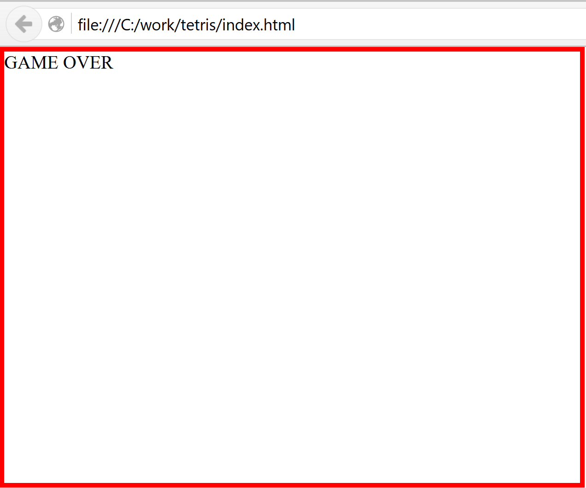
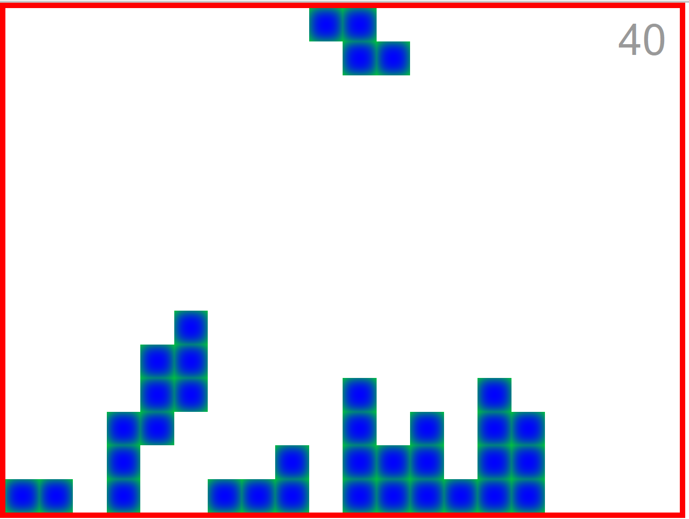

Previously, we converted the application to Typescript. In this episode we will implement collapsing rows, game ending and scoring.
To follow along with this article checkout the commit e843d2.
$ git clone https://github.com/liammclennan/tetris.git
$ git checkout e843d2
$ npm run bootstrap
$ npm run likehell
Collapsing Rows
In tetris rows collapse when they are full. The first step required for implementing this behaviour is to be able to detect full rows. Start with a test:
describe('game with last row full', ()=> {
var game = new Models.Game(()=>{});
game.rubble = _.range(1, game.cols+1).map(col => new Models.Point(game.rows, col));
it('should have one completed row', ()=> assert.equal(1, game.completedRows().length));
it('should have row 15 as completed', ()=> assert.equal(15, game.completedRows()[0]));
});
and implement the Game.completedRows() method. I have used underscore to generate ranges. The method works by finding all the rows for which every column contains rubble.
completedRows() {
return _.range(1,this.rows+1).filter(row =>
_.range(1,this.cols+1).every(col => this.rubbleHas(row,col))
);
}
rubbleHas(row,col) {
return this.rubble.some(point => point.row === row && point.col === col);
}
Next we need to collapse full rows when they are found. This involves removing all the rubble in the collapsed row, and then shifting all other rubble down. Again, start with a test:
describe('collapsing', ()=> {
var game = new Models.Game(()=>{});
var row14 = [new Models.Point(game.rows-1,1), new Models.Point(game.rows-1, 2)];
game.rubble = _.range(1, game.cols+1)
.map(col => new Models.Point(game.rows, col))
.concat(row14);
it('should move row 14 to row 15 (collapse)', ()=> {
assert.equal(22, game.rubble.length);
game.collapseRow(15);
assert.equal(2, game.rubble.length, 'the full row has been deleted');
assert.ok(_.some(game.rubble, point => point.row === 15 && point.col === 1), 'a point from the 2nd row has moved down');
assert.ok(_.some(game.rubble, point => point.row === 15 && point.col === 2), 'the other point from the 2nd row has moved down');
});
});
And then implement:
collapseRow(row) {
this.rubble = this.rubble.filter(point => point.row !== row);
this.rubble.filter(point => point.row < row).forEach(point => point.row += 1);
}
Ending the Game
The game should end when rubble reaches the top of the game area. The game object therefore has all the information required to know if the game has finished:
isGameOver() {
return this.rubble.some(point => point.row === 1);
}
Then at the end of the tick processing (convertToRubble) we know not to start a new piece if the game has ended:
convertToRubble() {
this.rubble = this.rubble.concat(this.fallingPiece.points());
this.completedRows().forEach(r => this.collapseRow(r));
if (!this.isGameOver()) {
this.startAPiece();
}
}
We should also check when processing actions:
function reducer(state = new Model.Game(()=>{}), action) {
if (state.isGameOver()) return state;
switch (action.type) {
case 'TICK':
const revedState = state.tick();
if (!revedState.isGameOver()) {
setTimeout(() => store.dispatch({ type: 'TICK' }),300);
}
return revedState;
case 'ROTATE':
return state.rotate();
case 'LEFT':
return state.left();
case 'RIGHT':
return state.right();
default: return state;
}
}
This effectively stops the TICK loop once the game ends.
Then we can change GameView component to change the UI when the game ends:
export var GameView = React.createClass<GameViewProps,any>({
render: function () {
return <div className="border" style={{width: this.props.game.cols*25, height: this.props.game.rows*25}}>
{ this.props.game.isGameOver() ?
<span>GAME OVER</span> : <span>
<PieceView piece={this.props.game.fallingPiece} />
<RubbleView rubble={this.props.game.rubble} />
</span>
}
</div>;
}
});

Scoring
We will use a simplified tetris scoring system that awards points for clearing rows. The more rows cleared the higher the award.
| # Lines | Points |
|---|---|
| 1 | 40 |
| 2 | 100 |
| 3 | 300 |
| 4 | 1200 |
We know when a row collapses, so we can add a method to Game that calculates the points to award when rows collapse. It can be a simple encoding of the above points table, with the correct indexing to retrieve the right value:
calculateAward(completedRows) {
const map = {
0: 0,
1: 40,
2: 100,
3: 300,
4: 1200
};
return map[completedRows.length];
}
A nice property of this implementation is that it is valid for values of completed rows >= 0. Tetris does not allow for more than 4 rows to be completed at the same time.
We can use calculateAward in the convertToRubble method to increment a Game.score property that tracks the players score.
convertToRubble() {
this.rubble = this.rubble.concat(this.fallingPiece.points());
const completedRows = this.completedRows();
completedRows.forEach(r => this.collapseRow(r));
this.score += this.calculateAward(completedRows);
if (!this.isGameOver()) {
this.startAPiece();
}
}
Now the player needs to know what their score is, so we modify GameView to include a ScoreView:
export var GameView = React.createClass<GameViewProps,any>({
render: function () {
return <div className="border" style={{width: this.props.game.cols*25, height: this.props.game.rows*25}}>
{ this.props.game.isGameOver() ?
<span>GAME OVER</span> : <span>
<PieceView piece={this.props.game.fallingPiece} />
<RubbleView rubble={this.props.game.rubble} />
<ScoreView score={this.props.game.score} />
</span>
}
</div>;
}
});
and implement score view to dump the game score in a div:
interface ScoreViewProps { score:number; }
const ScoreView = React.createClass<ScoreViewProps,any>({
render: function () {
return <div className="score-display">{this.props.score}</div>;
}
});
et voilà!
